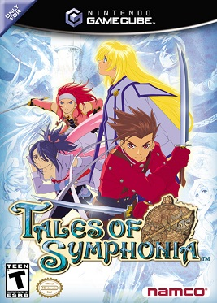

Este juego es un poco diferente ya que no es full rpg ya que se basa en un combate tipo hack and slash en donde tu controlas a un personaje y estan tus 3 compañeros siendo controlados por la computadora, en su historia tu mejor amiga collete es una elegida que posee hechizos de luz y atacaba con chakas siendo una peleadora de rango medio, durante su ascecion iba perdiendo los 5 sentidos perdio el gusto de primero luego el tacto pero el protagonista se dio cuenta e intento evitar que continuara con la travecia pero collete queria seguir al final perdio tambien su voz teniendo que hablar escribiendo en las manos de las personas.
